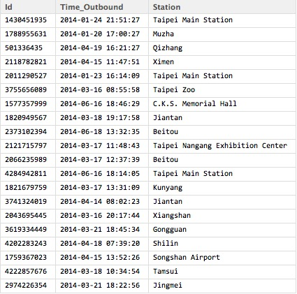
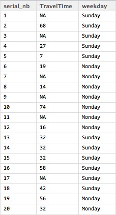
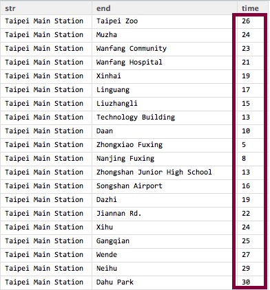
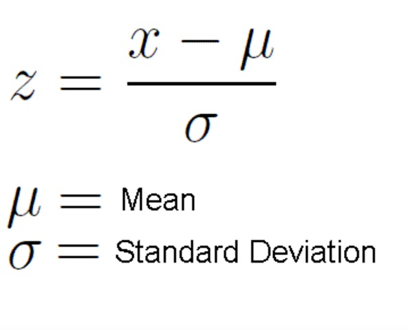
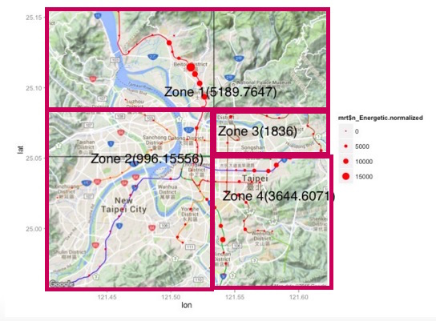

- Question: Where is the best place to locate the Elderly Sports Center?
Assumption: The more energetic seniors live there, the more appropriate will be
Types of metro cards in Taipei:
- Adult: Standard fare for the general public
- Student: For registered students only
Senior: seniors aged over 65
- Adult: Standard fare for the general public
Leverege data from Metro Cards to solve this problem
Analysis of Senior Metro Card Users Behavior
Chun-Chang Siao
Motivation
The Main Idea
Leverage data from Metro Cards to find out which areas of Taipei City are most populated by energetic seniors
The area with the most eneretic seniors might be the best place to locate the elderly sports center

Outline
Raw Data Demonstrating
Residence Tagging
Energetic Levels Measurement
Preprocessing
CART Model Building
Raw Data Demonstrating
Raw Data

Residence Tagging
Time Information Extraction
library(lubridate)
rawData1$hour <- hour(rawData1$Time_Outbound)
rawData1$year <- year(rawData1$Time_Outbound)
rawData1$month <- month(rawData1$Time_Outbound)
rawData1$day <- day(rawData1$Time_Outbound)
rawData1$weekday <- weekdays(rawData1$Time_Outbound)
rawData1$date <- format(rawData1$Time_Outbound, format="%B %d %Y")

Keep the last record of each user each day
library(dplyr)
lastRecord <- summarise(group_by(rawData1,Id,year,month,day),
lastRecord_in_EachDay= max(Time_Outbound))

Merge it with raw data to find the station name
lastRecord_merged <- merge(rawData1,lastRecord, by.x = c("Id","Time_Outbound"),
by.y = c("Id","lastRecord_in_EachDay"),all.y = T)

Where do those users live?
most_fequent <- function(x){
return(names(sort(table(x),decreasing=TRUE)[1]))
}
liveTable <- aggregate( Station~ Id, lastRecord_merged, most_fequent)

Combined with Google Map
library(ggmap)
map <- qmap(location = c(lon = 121.512386, lat = 25.056269), zoom = 12)
map +geom_point(aes(x=lon, y=lat,size=n_citizen),color="black",data= metro)

Energetic Levels Measurement
How to determine whether a senior is energetic or not?
Assumption: The longer they travel, the more energetic they might be
Energetic Levels Measurement
The website of the Metro- Using a parser written in Python

Energetic Levels Measurement
- The website of the Metro
Using a parser written in Python

Energetic Levels Measurement
With the data parsed down and the raw data, we could calculate travel time each senior spend each day to represent his/her energetic level
Ex: the user,2766995571, who lives in Tucheng. And the total time the senior spend on traveling on 2014/1/19 are sum of traveling time from Tucheng to Technology Building and from Technology Building back to Tucheng, which is 34 + 34 = 68 min
Tucheng -> Technology Building -> Tucheng

Energetic Levels Measurement
Result:
The travel time the seniors lived around Tucheng station spent each day

Energetic Levels Measurement
Now we get:
- Where those seniors live
- How long each senior spends on Metro
Preprocessing
Preprocessing
We plot these information on GoogleMap
the bigger the dot is, the more average travel time those seniors live there spent
library(ggmap)
map <- qmap(location = c(lon = 121.512386, lat = 25.056269), zoom = 12)
map +geom_point(aes(x=lon, y=lat,size=AvgTravalTime),color='black',data= metro)

Preprocessing
- Of course those people live in outlying areas spend more time on commuting....
Travel Time = Outlying Degree & Energetic Levels
Preprocessing
Travel Time = Outlying Degree & Energetic Levels- We need to find a adjustment variable which could stand for
the outlying degreeto adjust the travel time based on different stations.

Preprocessing
- Calculate
"Outlyzing Degree"for each station,the average travel time between it to any other stations. - Take two stations as examples: Taipei Main Station(central):16.30435 (min) and Tamsui(outlying):46.94565 (min)
- The travel time a senior spend need to divide by its corresponding outlyzing degree(based
on where he/she lives) to getthe adjusted travel time, which could actually show the energetic level of each senior.


Preprocessing
Another thing is needed

Normalization

Preprocessing (Code)
all=data.frame(TravelTime=0,station="")
files <- list.files("~/Desktop/MetroCard/TravelTime/")
for(f in files){
tmp <- read.csv(paste0("~/Desktop/MetroCard/TravelTime/",f),header = T)
tmp$station <- strsplit(f,".csv")[[1]]
all <- rbind(all,tmp[!is.na(tmp$TravelTime),c("TravelTime","station")])
}
all = all[-1,]
all$Normalized.TravelTime <- normalize(all$TravelTime)
all$AdjedAvgTravelTime.Normalized <- 0
metro$adjV.Normalized <- normalize(metro$TravalTime)
for(i in unique(as.character(metro$name))){
all[all$station==i,"AdjedTravelTime.Normalized"] <- all[all$name==i,"Normalized.Dist"]/metro$adjV.Normalized[metro$name==i]
}
summary(all$AdjedTravelTime.Normalized)

Preprocessing
for(i in unique(as.character(metro$name))){
metro$n_Energetic.normalized[metro$name==i] <-
sum(all$adjedTravelTime.Normalized[all$station==i] > 1.0260)
}
p = map + geom_point(aes(x=lon, y=lat,size=n_Energetic.normalized),
col =heat.colors(1), data= metro)

Preprocessing
- Try to build a model to seperate all of Taipei City into high or low populated zones by energetic seniors
- Choose CART (Classification and Regression Trees), becasue it could capture the non-linear characteristic and is interpretive
Model Building
Model Building
tr.control = trainControl(method = "cv", number = 2)
cp.grid = expand.grid( .cp = (0:15)*0.001)
tr = train(n_Energetic.normalized ~ lat + lon, data = metro, method = "rpart",
trControl = tr.control, tuneGrid = cp.grid)
best.tree = tr$finalModel
prp(best.tree, digits = 8)

Model Building
p = map + geom_point(aes(x=lon, y=lat,size=mrt$n_Energetic.normalized),
col =heat.colors(1), data= metro)


Few more things....
Probability Distribution of travel time each senior spend (each day) for each station

HeatMap for each station
weekdays v.s hours
Stability of outbound counts for each station
- Each line stand for each day
- Stable v.s Unstable